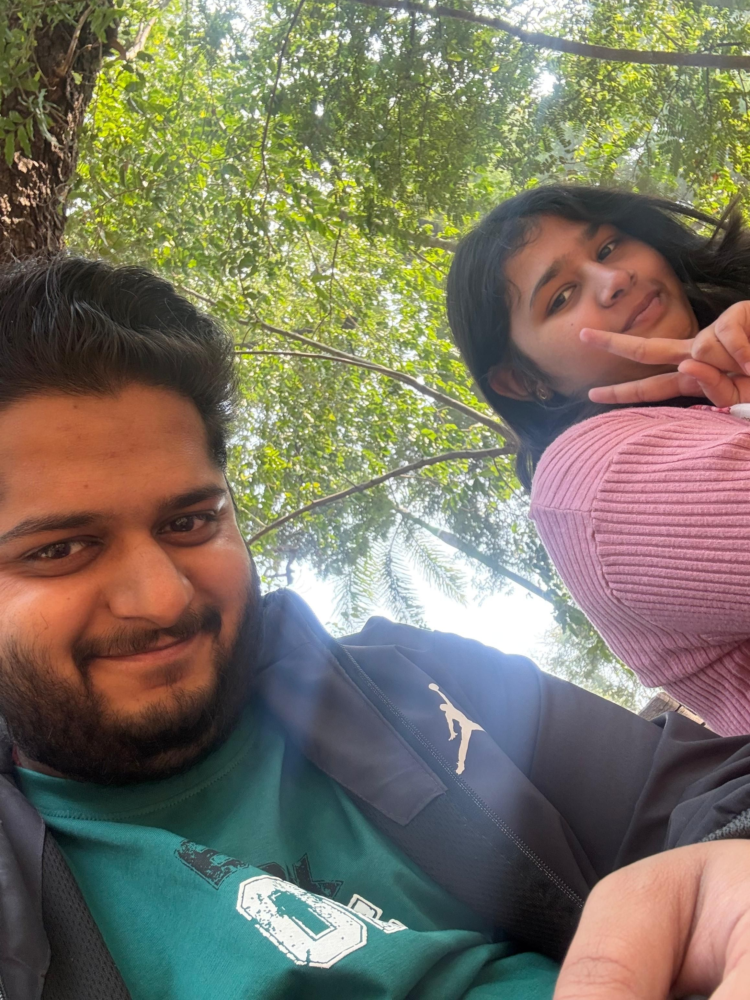

One year of us
Somewhere between our conversations, silences, and ordinary days, you quietly became important to me.
There wasn’t a loud beginning or a sudden moment. It just happened — slowly, naturally. Being with you never felt forced. It felt easy.
With you, I learned that love doesn’t always have to be intense or dramatic. Sometimes, it’s calm. Sometimes, it’s just knowing someone is there.
You made me feel safe — safe to be myself, safe to feel, safe to grow. You were my comfort on days when my mind felt heavy, and my calm when things felt overwhelming.
This year wasn’t about perfection. We learned, we adjusted, and we chose each other through it all. And somewhere along the way, you became home — not a place, but a feeling.
Thank you for staying. Thank you for being patient, kind, and consistent.
Still choosing you.
Even on the ordinary days.

— Tanvi